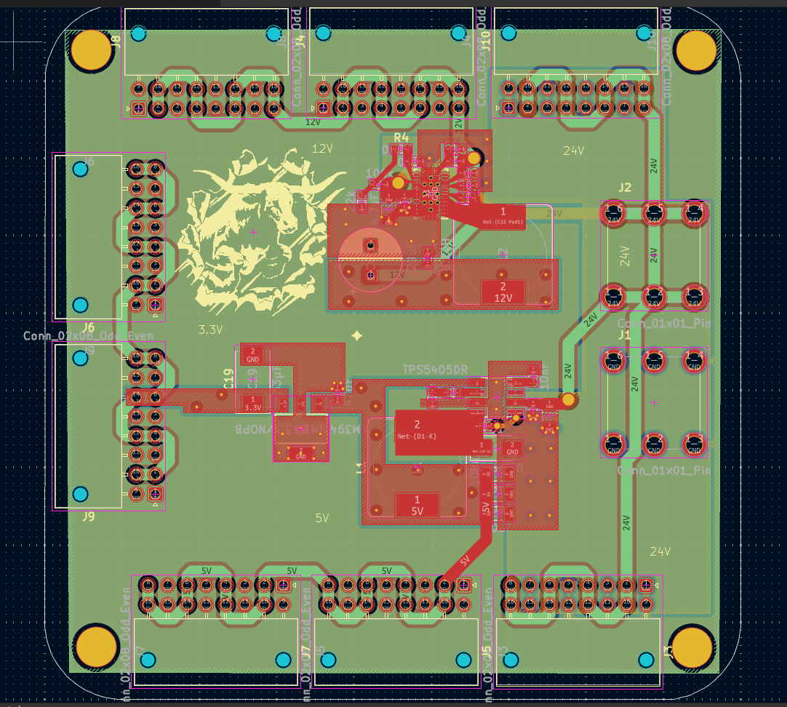
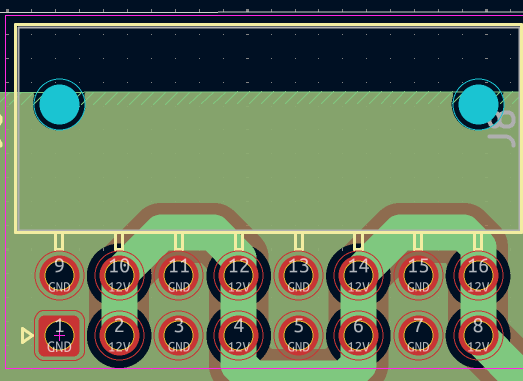

Guadaloop LV Board
The LV board is designed to convert 24V to 12V, 5V, and 3.3V.
Conversion from 24V to 12V and from 24V to 5V uses a buck converter to avoid power loss, and conversion from 5V to 3.3V uses an LDO to maintain a stable voltage for sensors.
Terminal Locations

- The input is on the right side of the image. The top screw is 24V, and the bottom is GND.
- The top right and bottom right nanofit terminals are both 24V outputs
- The top middle and top left nanofit terminals are both 12V outputs
- The two nanofit terminals on the left are both 3.3V outputs
- The bottom middle and bottom left nanofit terminals are both 5V outputs

For clarification, each nanofit terminal has both power and ground. GND is the square hole and the hole above it; they alternate between ground and power per column. Each nanofit terminal can supply power to 8 devices.
Current Limits
- The maximum current that can be drawn from the 24V output rail is determined by the 60V board.
- The maximum current the 12V buck can supply is 3.5A
- The maximum current the 5V buck can supply is 2A, but that depends on how much current the LDO is also drawing from the buck
- The maximum current the 3.3V LDO can supply is 1A.